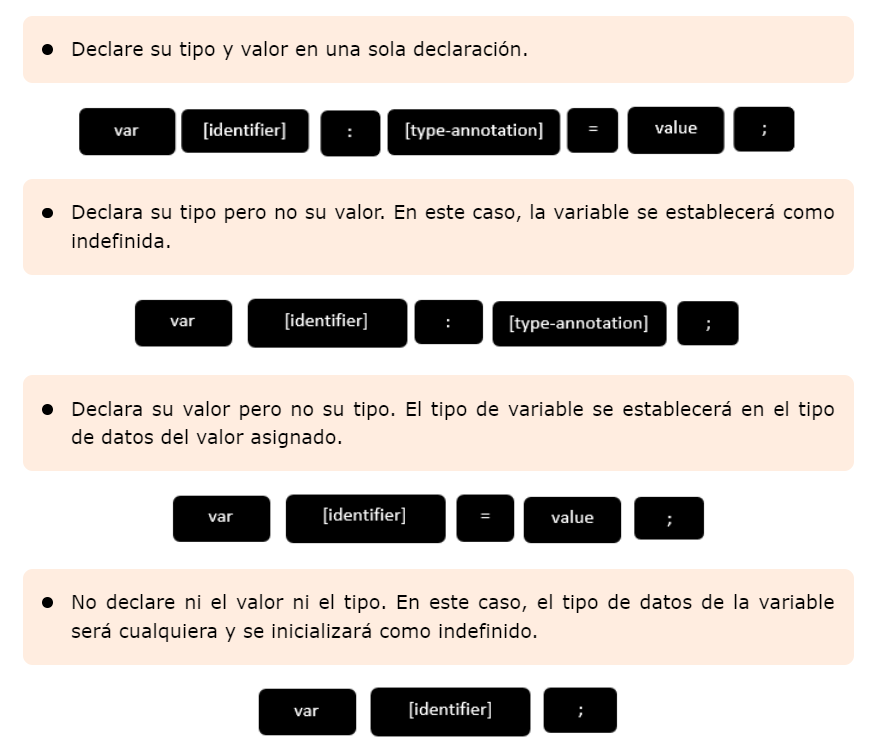
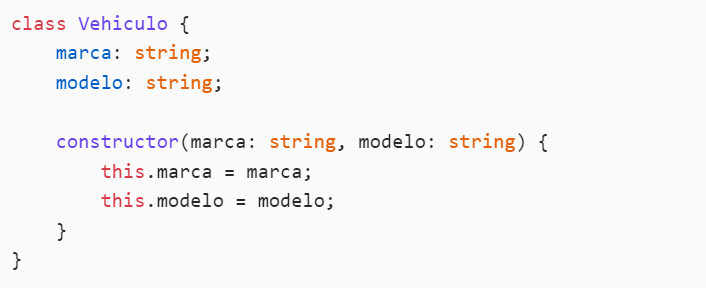
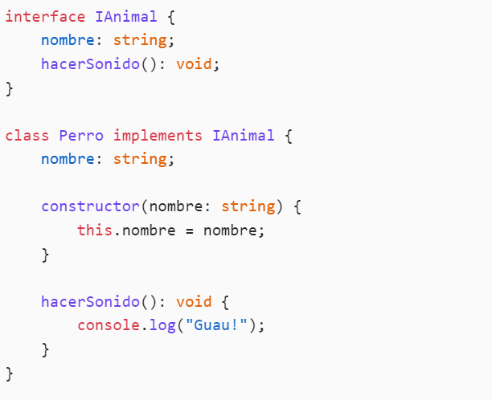
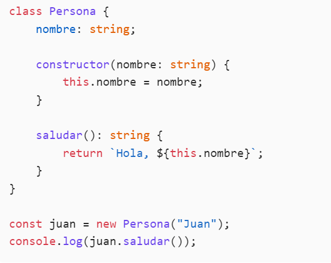
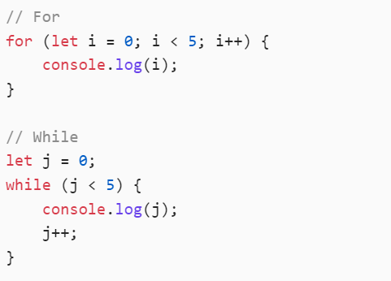
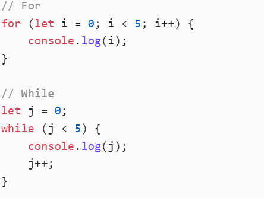
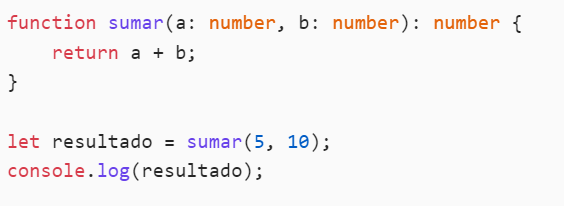

¿Qué es typescript?
TypeScript (TS) es un lenguaje de programación que se basa en JavaScript (JS) pero que incorpora
diversas
características adicionales. Esto permite escribir código con menos errores, de manera más sencilla,
coherente y fácil de probar, resultando en un código más limpio y robusto.
Desarrollado por Microsoft en 2012, su uso ha ido en aumento desde entonces,
especialmente tras la decisión de Google de adoptarlo como el lenguaje predeterminado para Angular.
Actualmente, TypeScript se puede utilizar en muchos de los frameworks y bibliotecas más destacados,
como React para el frontend y Node para el backend.
Sintaxis
Composición: Incluyen caracteres y dígitos, no pueden comenzar con un dígito.
-Símbolos: Solo se permiten _ y $.
-Palabras clave: No pueden ser palabras clave del lenguaje.
-Unicidad: Deben ser únicos.
-Sensibilidad: Distinguen entre mayúsculas y minúsculas.
-Espacios: No pueden contener espacios.
varibales
Es “un espacio con nombre en la memoria” que almacena valores. En otras palabras, actúa como un
contenedor de valores en un programa. Las variables de TypeScript deben seguir las reglas de
nomenclatura de JavaScript:
-Los nombres de variables pueden contener letras y dígitos numéricos.
-No pueden contener espacios ni caracteres especiales, excepto el guión bajo (_) y el signo de dólar
($).
-Los nombres de variables no pueden comenzar con un dígito.
string: cadenas de texto
number: números
boolean: verdadero o falso
any: cualquier tipo
void: ausencia de tipo (usado en funciones que no devuelven valor)

Clases
Las clases en TypeScript sirven como plantillas para crear objetos,
permitiendo declarar atributos y métodos que comparten.

Interface
Las interfaces en TypeScript son una forma de definir la estructura de un objeto.
Actúan como un contrato que especifica qué propiedades y métodos debe tener un objeto, permitiendo
así un uso más seguro y organizado del código.

Metodos
Los métodos en TypeScript son funciones que se definen dentro de una clase y que operan sobre las
propiedades de esa clase.
Los métodos permiten encapsular comportamientos y lógica que están relacionados con los objetos de
esa clase.

Types
los "types" (tipos) son una forma de definir la estructura y el tipo de los datos que se pueden
utilizar en una aplicación.
TypeScript es un superconjunto de JavaScript que agrega tipado estático,
lo que ayuda a detectar errores en tiempo de compilación en lugar de en tiempo de ejecución.
Conceptos Básicos
Ciclos
Los ciclos permiten ejecutar un bloque de código múltiples veces. TypeScript soporta los ciclos
for, while y do...while.

Condicionales
Las estructuras condicionales permiten ejecutar diferentes bloques de código basados en condiciones.
TypeScript usa if, else if y else.

Arrays y Listas
Los arrays en TypeScript permiten almacenar múltiples valores del mismo tipo. Puedes definir arrays
de cualquier tipo, incluyendo números, cadenas y más.
let listaDeNumeros: Array = [1,2,3,4,5];
let heroes: string[];
Funciones
Las funciones en TypeScript pueden tener tipos de parámetros y un tipo de retorno específico. Esto
ayuda a asegurar que la función se utilice correctamente y que los datos sean del tipo esperado.
